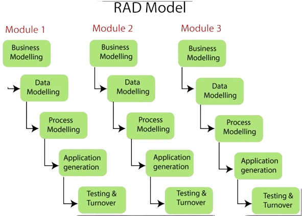

Radiaalne arendusmudel on tarkvaraarenduse protsess, mis toetub kiirele prototüüpimisele ja iteratiivsele arendusele.
See mudel võimaldab arendajatel kiiresti reageerida muutuvatele nõuetele ja saada kiiret tagasisidet klientidelt,
kes saavad varajastes etappides näha töötavat prototüüpi.

1. Ärianalüüs
Kiire reageerimine muutuvatele nõuetele.
Võib tekkida ebaselgus keerukamate projektide korral.
2. Prototüüpimine
Varajane kliendi kaasamine ja tagasiside.
Prototüüpide täpne kajastamine võib olla väljakutse.
3. Ehitamine
Kiire arendus, vähendab projekti riski.
Areng võib muutuda ebastabiilseks, kui prototüüpide põhjalik testimine puudub.
4. Hindamine
Varajane avastatud vead parandatakse kiiresti.
Kasutajate muutuvad nõuded võivad mõjutada juba valminud prototüüpe.
5. Lõpuleviimine
Täpne ja kiire lõpuleviimine vastavalt klientide vajadustele.